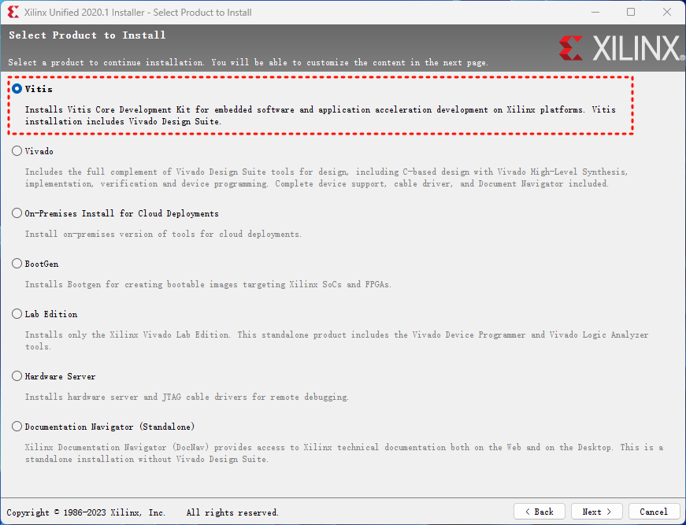
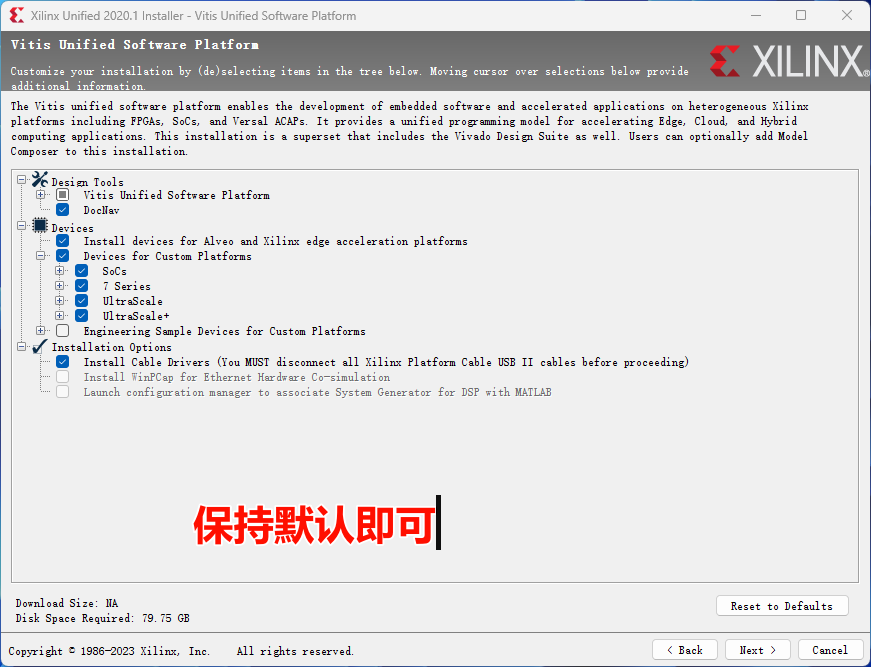
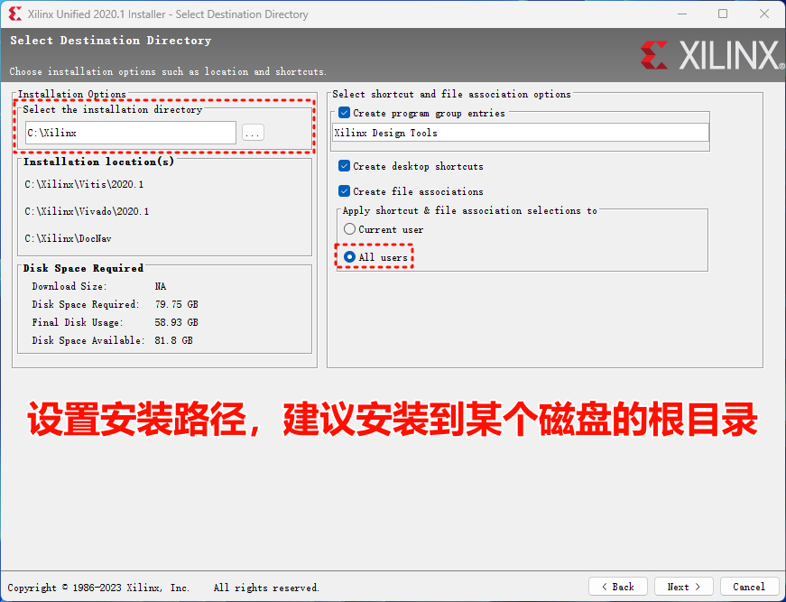

安装开发环境
1. 系统和软件要求
操作系统：Windows 10/11
软件清单，见下表：
| 软件名称 | 说明 |
|---|---|
| MATLAB 2021a | 需要安装Vivado补丁 |
| HDL Coder Support Package for Xilinx Zynq Platform | 硬件支持包 |
| HDL Coder Support Package for Xilinx FPGA Boards | 硬件支持包 |
| Embedded Coder Support Package for Xilinx Zynq Platform | 硬件支持包 |
| Embedded Coder Support Package for ARM Cortex-A Processors | 硬件支持包 |
| Xilinx Unified 2020.1 (包含Vitis和Vivado) | 编译平台代码生成固件 |
| Visual Studio 2017 (VS2017) | 用于代码生成 |
1.1 安装MATLAB 2021a和相关补丁
在安装好MATLAB 2021a后，安装用于Vivado的补丁。点击此处获取更详细内容。
Warning
不安装该补丁会导致无法正常生成用于FPGA的IP CORE
- 点击进入页面（可能需要注册登录）下载补丁附件
attachment_2656440_2022-01-07.zip。 - 下载后解压，可以看到里面包含了用于不同MATLAB版本补丁。
- 在解压后文件夹中，打开名为
R2021a的文件夹，将里面的文件IPEmitterVivado.p覆盖<MATLAB>\toolbox\hdlcoder\hdlcommon\+hdlturnkey\+ip\IPEmitterVivado.p（提前对被覆盖文件做好备份）。<MATLAB>表示MATLAB 2021a的安装根目录。
1.2 安装硬件支持包
- 将下载好的支持包复制到下载目录下面：路径示例
C:\Users\<username>\Downloads\MathWorks\SupportPackages\R2021a。<username>表示你的电脑用户名 - 到MATLAB安装路径
<MATLAB>\bin\win64下双击运行SupportSoftwareInstaller.exe。 - 接下来按照提示操作即可。
Note
- Embedded Coder Support Package for Xilinx Zynq Platform（似乎非必要，和下面支持包的二选一即可，保险起见全部安装）
- Embedded Coder Support Package for ARM Cortex-A Processors（目的是其包含的工具链Linaro Toolchain v4.8）
详细操作细节可以参考下面视频
1.3 安装Xilinx Unified 2020.1
点此查看下载页面。下载连接为：https://china.xilinx.com/member/forms/download/xef.html?filename=Xilinx_Unified_2020.1_0602_1208.tar.gz（需要注册登录账号）
将下载的软件包解压并运行安装程序。下面介绍几个关键选项
1. 选择Vitis

2. 保持默认安装选项即可

3. 设置安装路径。可以选择为所有用户安装。

后续按照安装指引操作即可。
1.4 安装Visual Studio 2017
该版本不是唯一。可以安装其他VS版本。但是不建议安装最新版本。目前MALAB采用2021a，因此推荐采用早于2021年发布的VS版本。
vs_Community.exe下载
2. 导入Vitis工程源码
请提前安装好git工具，安装路径不要有空格！并设置好git的环境变量。
1. 下载代码并用Vitis打开源代码根目录
运行
git clone https://gitee.com/RflyBUAA/rfly-sim-rt-vitis.git用Vitis将该仓库目录作为工作空间打开，如下图所示

2. 导入工程
在上一步结束后的软件界面上，进行Import...（导入）操作，如下图所示

3. 选择Eclipse方式导入

4. 导入设置
设置为前面clone仓库本地目录，并完成相关设置

5. 检查导入结果
导入工程后，打开如下图的文件工程会更新该文件的信息，避免编译报错

设置完成后，日后运行可直接用Vitis打开该源码目录为工作空间。
3. 工程关系说明

前面内容完成了Vitis工程的设置。接下来，完成Simulink工程和Vivado工程的设置。首先，用户自行选择合适的位置运行
git clone https://gitee.com/RflyBUAA/socfpga-hil-platformv2.git即可得到用于MATLAB/Simulink和Vivado的工程文件。下面给出了该工程内的文件说明。
| 文件夹 | 说明 |
|---|---|
| IP | Vivado工程路径 |
| PL | MATLAB/Simulink工程路径 |
| Packages | 无关文件 |